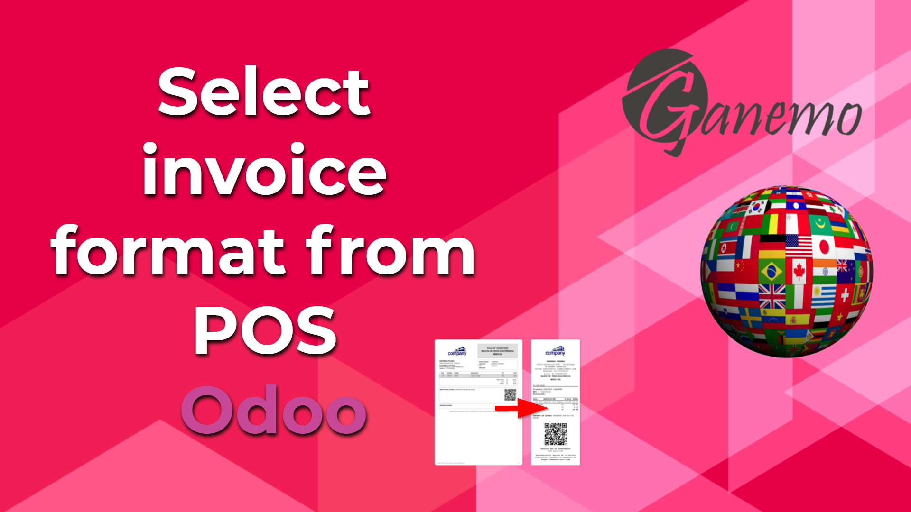

<section class="oe_container oe_dark">
    <div class="row">
        <div class="col-sm-12">
            
        </div>
        <div class="oe_span8">
            <span>From the point of sale configuration you will be able to choose which invoice format will be used when an invoice is generated from the POS.
                This module does not create new formats. But It Can Work With Any Invoice Format That Is Created Using Odoo's Native Print Format Logic.</span>
        </div>
    </div>
</section>